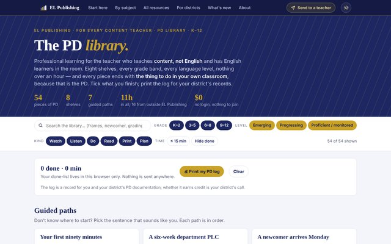
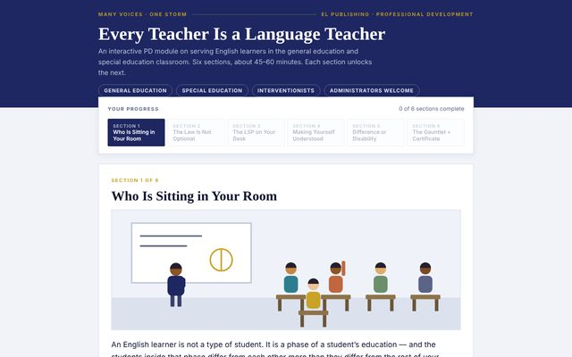
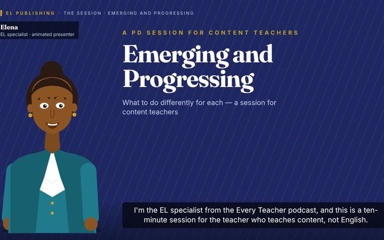
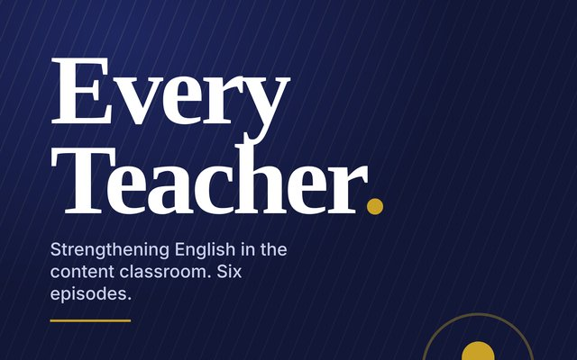
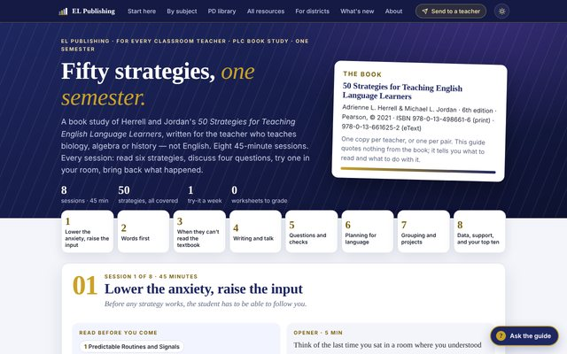
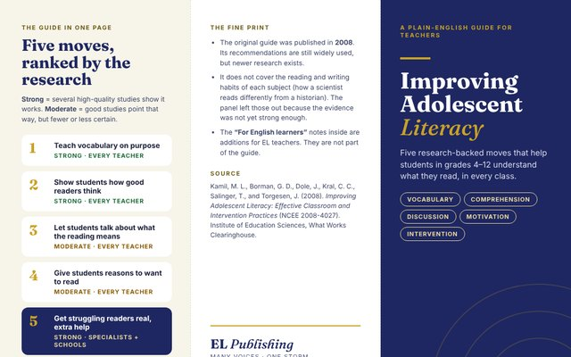

Every piece of professional learning on the hub: Every Teacher Is a Language Teacher (self-paced, six sections, fits a department meeting), The Session with Elena (Emerging and Progressing, taught), the Every Teacher podcast, Fifty Strategies, One Semester (a PLC book study), Improving Adolescent Literacy in plain English, and the PD Library index of 54 more pieces by grade and level.

The PD LibraryA taught session, the Six Moves videos, and 54 more pieces of PD by grade and level.PD library · 7 videos · 61 pieces

Every Teacher Is a Language TeacherSelf-paced PD that fits a department meeting. Six sections, no facilitator.PD module · 45–60 min · opens on its own site

The Session: Emerging and ProgressingElena, an animated presenter, teaches what to change for each level.Video PD · 8 minutes · taught

Every Teacher: the PodcastSix five-minute conversations on strengthening English in a content class.Podcast · 6 episodes

Fifty Strategies, One SemesterA PLC book study of Herrell & Jordan's 50 Strategies, built for the teacher who teaches biology, not English.Book study · 8 sessions · 45 min

Improving Adolescent Literacy, in Plain EnglishThe federal reading guide's five moves, on one folded sheet any teacher can use.Brochure · Trifold · PDF